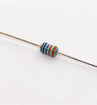
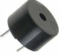
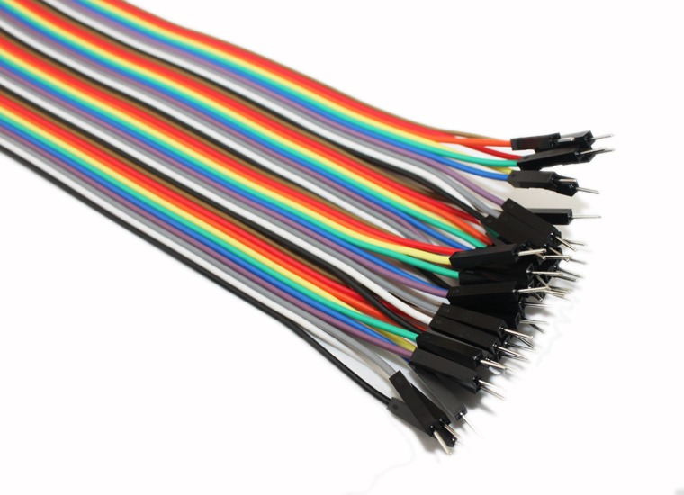
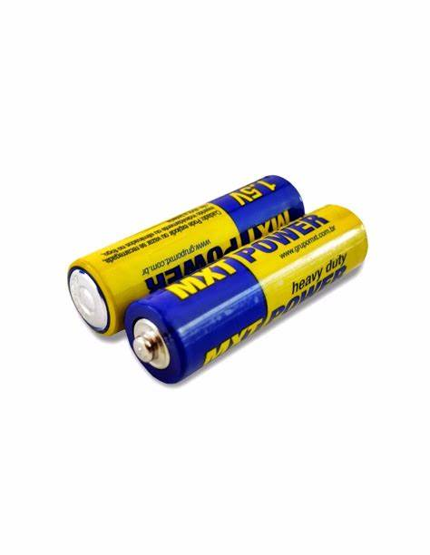
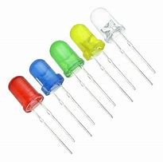

"Estamos muito contentes em participar do curso cyberpedagogia
Homenagem Dia das Mães

eDB Diário de Bordo Eletrônico
| Numa caixa tinha uma peça pequena chamada RESISTOR e no meio dela tinha várias faixas coloridas pintadas |  |
| Tinha outra peça um pouco maior se chama em inglês BUZZER , que quer dizer campainha em português |  |
| Também tinham pedaços de FIOS que servem para ligar umas nas outras |  |
| e umas PILHAS que vão fornecer energia que servem para ligar umas nas outras |  |
| Tinham também peças cabeçudas de cores diferentes que são os LEDs: eles vão brilhar |  |